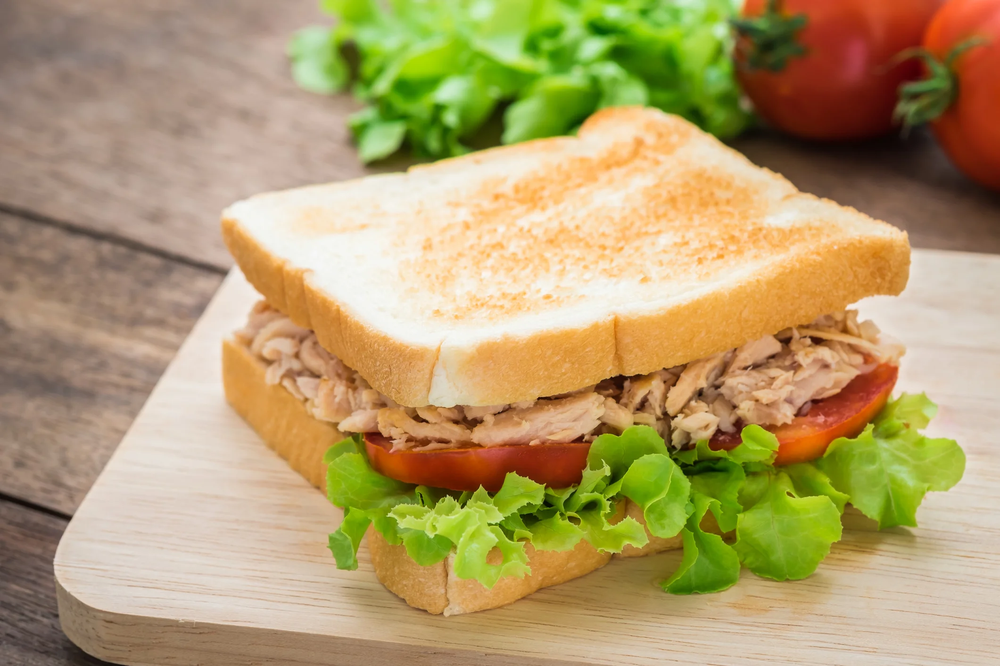

Sanduíche Natural de Frango
Ingredientes
- 2 pães integrais
- 1 xícara de frango cozido e desfiado
- 2 colheres de sopa de maionese ou iogurte natural
- 1/2 cenoura ralada
- Folhas de alface
- Sal e pimenta a gosto
Utensílios Necessários
- Tigela
- Colher
- Faca
Modo de Preparo
- Misture o frango com a maionese, cenoura, sal e pimenta.
- Monte o sanduíche com o recheio e folhas de alface.
- Sirva gelado ou levemente tostado.
Informações Nutricionais (por sanduíche)
| Nutriente | Quantidade |
|---|---|
| Calorias | 260 kcal |
| Proteínas | 18g |
| Carboidratos | 20g |
| Gorduras | 11g |